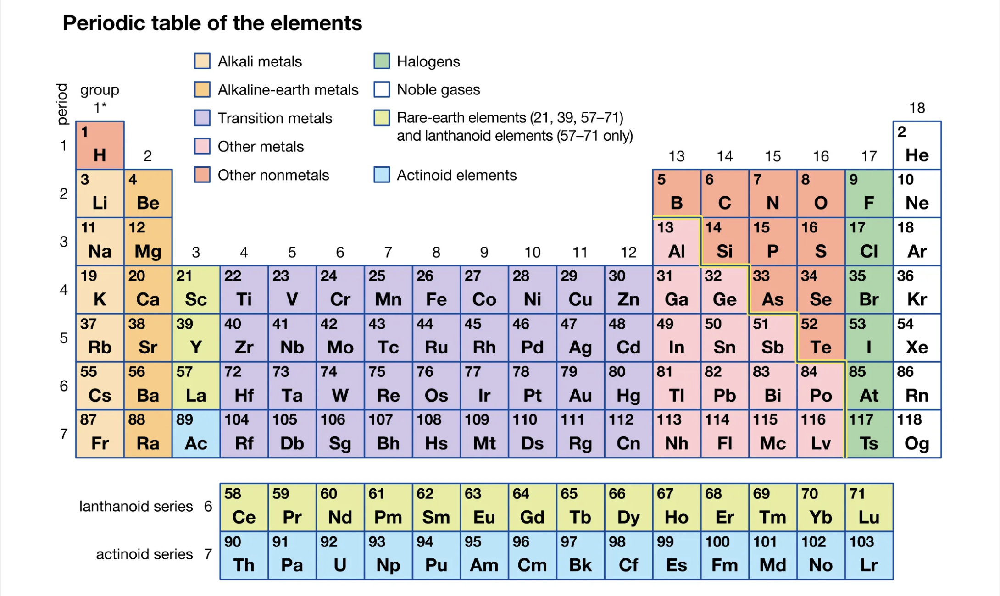
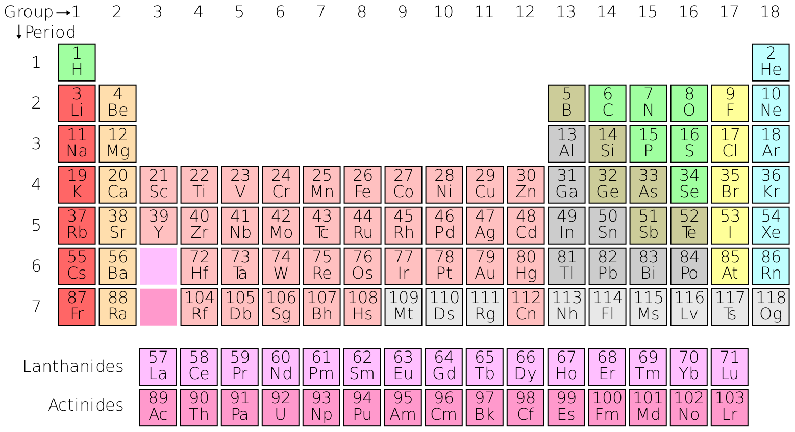

Historical Background
The periodic table was created by Dmitri Mendeleev in 1869. Mendeleev's genius lay in organizing elements based on their atomic mass and leaving spaces for elements yet to be discovered. His predictions about the properties of undiscovered elements were remarkably accurate, cementing the periodic table as a cornerstone of chemistry.
Mendeleev's first periodic table (1869).
Structure of the Periodic Table
The periodic table is divided into rows called periods and columns called groups. Each element is arranged based on its atomic number, which represents the number of protons in its nucleus.
- Periods: Horizontal rows (1 to 7) represent the principal energy levels.
- Groups: Vertical columns (1 to 18) group elements with similar chemical properties.
Groups and Categories
The periodic table is divided into categories based on shared chemical and physical properties. Below is a detailed explanation of each category:
1. Alkali Metals (Group 1)
Alkali metals are highly reactive metals found in Group 1 of the periodic table. They include lithium (Li), sodium (Na), potassium (K), rubidium (Rb), cesium (Cs), and francium (Fr).
- Properties: Soft, low melting points, and highly reactive with water.
- Applications: Lithium batteries, sodium-vapor lamps, and potassium fertilizers.
2. Alkaline Earth Metals (Group 2)
Alkaline earth metals are less reactive than alkali metals and are found in Group 2. This group includes beryllium (Be), magnesium (Mg), calcium (Ca), strontium (Sr), barium (Ba), and radium (Ra).
- Properties: Harder than alkali metals, high melting points, and reactive but less so than Group 1 elements.
- Applications: Magnesium alloys, calcium supplements, and strontium for fireworks.
3. Transition Metals (Groups 3-12)
Transition metals are found in the center of the periodic table and include elements like iron (Fe), copper (Cu), and gold (Au). They are known for their ability to form colorful compounds.
- Properties: High melting points, excellent conductors of electricity, and form multiple oxidation states.
- Applications: Construction materials, electrical wiring, and catalysts in chemical reactions.
4. Post-Transition Metals
Post-transition metals include aluminum (Al), gallium (Ga), indium (In), tin (Sn), thallium (Tl), lead (Pb), and bismuth (Bi). These elements have properties between transition metals and metalloids.
- Properties: Malleable, lower melting points than transition metals, and less conductive.
- Applications: Aluminum for packaging, lead-acid batteries, and bismuth in medical applications.
5. Metalloids
Metalloids, or semimetals, have properties of both metals and nonmetals. Examples include boron (B), silicon (Si), and arsenic (As).
- Properties: Semi-conductive, brittle, and exhibit a mix of metallic and nonmetallic behavior.
- Applications: Silicon in electronics, boron in glass manufacturing, and arsenic in pesticides.
6. Nonmetals
Nonmetals are found on the right side of the periodic table and include elements like oxygen (O), nitrogen (N), and sulfur (S). These elements are essential for life.
- Properties: Poor conductors, brittle when solid, and form acidic oxides.
- Applications: Breathing oxygen, nitrogen fertilizers, and sulfur in rubber production.
7. Halogens (Group 17)
Halogens are highly reactive nonmetals found in Group 17, including fluorine (F), chlorine (Cl), bromine (Br), and iodine (I). They readily form salts with metals.
- Properties: Highly electronegative, form salts with metals, and exist in various states (gas, liquid, solid).
- Applications: Fluoride in toothpaste, chlorine for water purification, and iodine for medical antiseptics.
8. Noble Gases (Group 18)
Noble gases are inert gases in Group 18, including helium (He), neon (Ne), and argon (Ar). They are chemically stable due to their full valence shells.
- Properties: Colorless, odorless, and nonreactive under normal conditions.
- Applications: Helium in balloons, neon lighting, and argon for welding.
Importance of the Periodic Table
The periodic table provides a framework for understanding the relationships between chemical properties and atomic structure. It is a vital tool for predicting the behavior of elements and their compounds, advancing fields like chemistry, physics, and material science.
Future of the Periodic Table
As scientists continue to discover new elements and explore the properties of superheavy elements, the periodic table evolves. It remains a dynamic and essential resource in scientific discovery.